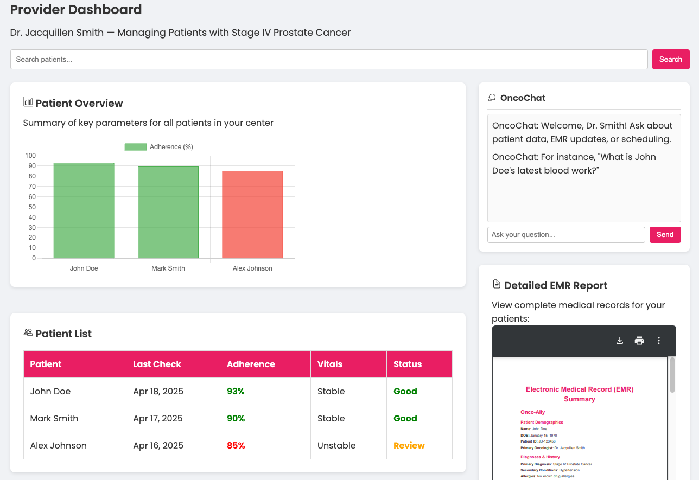

Personalizing cancer care for everyone, everywhere — through intelligent AI, wearable tech, and human compassion.
Today's cancer care is fragmented — patients struggle with complex treatment regimens, delayed diagnostics, and communication barriers. Providers face outdated systems, incomplete data, and limited real-time insights that cost precious time.
Onco-Ally integrates advanced AI analytics, wearable technology, and multilingual support into one unified platform — providing real-time insights and personalized treatment recommendations that empower patients and providers alike.
Built by a team of MIT innovators, Onco-Ally represents a convergence of systems engineering, machine learning, and deep compassion for patients. We don't just build software — we build hope.
From concept to cloud, our MIT Learnings work ensures every feature is evidence-based, clinically sound, and designed with real patient journeys in mind.

Six pillars of innovation working together to deliver oncology care that's smarter, faster, and more human.
Personalized dashboards that give patients ownership over their care journey with real-time data and support.
Real-time patient data, AI-assisted diagnostics, and integrated EMR systems so providers can focus on what matters.
Predictive analytics that anticipate complications, optimize treatment plans, and continuously learn from outcomes.
Seamless bi-directional integration with leading electronic medical record systems — no workflow disruption.
HIPAA-compliant, scalable cloud architecture ensuring 99.99% uptime and enterprise-grade security worldwide.
Breaking down language barriers with intelligent translation so every patient receives care in their native language.
We collaborate with industry leaders to build a comprehensive ecosystem — bridging gaps in communication, remote care, and data-driven decisions.
Empowering individuals to own and manage their care journey with clarity.
Real-time patient data and integrated EMR systems for faster decisions.
Seamless integration with leading electronic medical records platforms.
Cutting-edge intelligence for predictive, personalized oncology care.
Scalable, secure, and robust data management trusted worldwide.
Join thousands of patients, providers, and innovators in building a future where no one fights cancer alone.